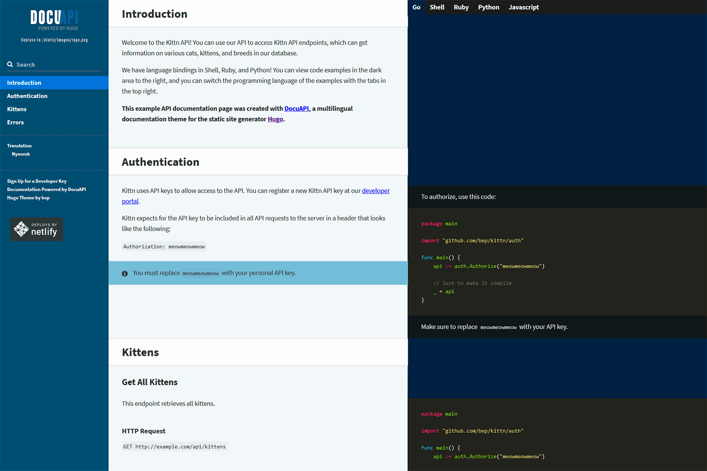

hugo的介绍
hugo是一个 不一般的 静态网站生成器
- 安全性:
- 基于go module文件,保证第三方插件的安全(checksum)
- 文件保护(跨项目目录文件,项目内软链接-只可读)
- GDPR 数据隐私保护(欧盟隐私条例),大厂埋点配置化,可以启用保护规则 （国内好像也有这种趋势）
- 特性:
- 静态页面; 安全迅速
- 构建时间短- 相比 hexo实在是太快了
- 分类,pretty url
- 开发模式热加载;
- 随时随地发布,无依赖(go特性)
- Toml Yaml Json配置文件支持
hugo安装
hugo的安装，下载源码 执行 go install –tags extended
基础支持
- 支持mermaid
- 支持mathjax
- 评论
- 本地图片支持
评论支持
本地资源

数学公式
修改主题配置文件
[params.math]
enable = true
# 每个md文件前加上tag
math:
enable: true
hugo help
推荐主题
docuapi
https://hub.fastgit.org/bep/docuapi
为document编写而生

LoveIt
github.com/dillonzq/LoveIt
https://hugoloveit.com/categories/documentation/
图片代码支持都比较好